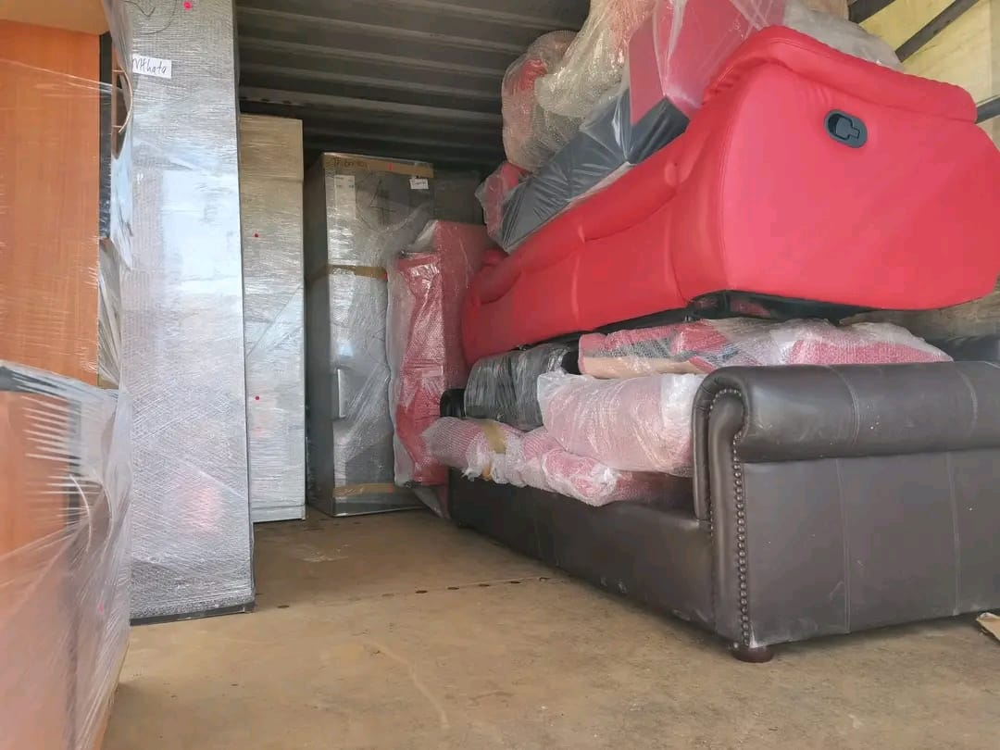
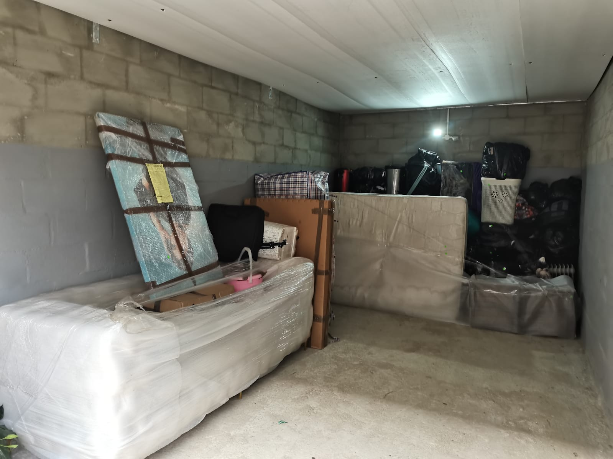

Full House & Furniture Removals
Moving home? Our team handles full house moves across Cape Town and Western Cape with care and efficiency.
View Full RemovalsOld couch, bed, fridge or bulky furniture — collected and disposed of responsibly
Sometimes you just need one item removed — an old couch that won't fit in your car, a broken fridge, a worn-out bed frame, or any bulky furniture you need gone. You shouldn't have to pay for a full removal truck to move a single piece.
At Wize Removal, we offer affordable single-item furniture removal across Cape Town. Our team collects your item from your home, flat or office and disposes of it responsibly — donating usable pieces to local charities where possible, and disposing of the rest at compliant Western Cape waste facilities.

Old furniture is one of Cape Town's biggest waste challenges. Illegal dumping causes environmental damage and attracts fines. When you book Wize Removal for your furniture disposal service in Cape Town, we handle everything legally and ethically.
We assess each item on collection: reusable furniture in good condition is donated to local charities and community organisations in the Western Cape. Items beyond use are disposed of at registered waste facilities, so you can clear your space without guilt.

Yes — we specialise in single-item removal. Whether it's an old couch, sofa, armchair or any bulky furniture, we collect from anywhere in Cape Town without needing to fill a full truck.
Single item removal in Cape Town typically starts from R350 depending on the item and your location. Contact us on 066 312 8522 for a free, no-obligation quote.
We remove couches, sofas, beds and bed frames, wardrobes, fridges, washing machines, tumble dryers, dining tables, desks and any other bulky household or office items.
Yes. Where possible, we donate usable furniture to local charities in Cape Town. Non-reusable items are disposed of at registered facilities in compliance with Western Cape waste regulations.
Moving home? Our team handles full house moves across Cape Town and Western Cape with care and efficiency.
View Full RemovalsWe serve Claremont, Rondebosch, Wynberg, Kenilworth and all Cape Town Southern Suburbs.
Southern SuburbsOur home base — fast service across Kraaifontein, Bellville, Brackenfell and surrounds.
Northern Suburbs